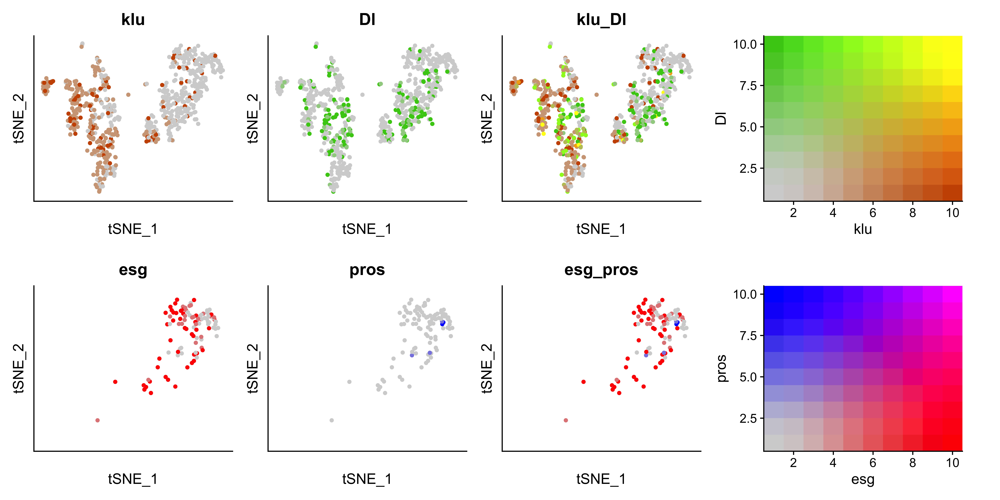
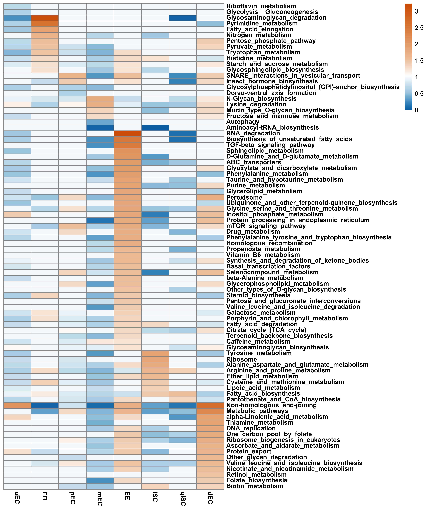
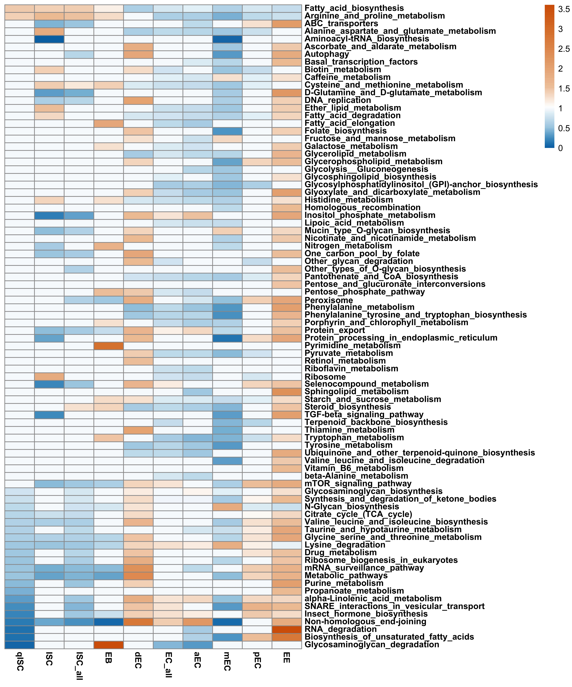

R / Bioconductor Single-Cell Objects (.rds) and Expression Matrices
In the original analysis scripts, relabeling Cluster "2" to dEC (differentiating enterocytes) and merging the qISC (n = 104), pISC (n = 102), and EB (n = 274) progenitor annotations occurred at script runtime. Both pre-annotated objects and the original unmodified files are provided below.
| File | Class & Dimensions | Description | Download |
|---|---|---|---|
Zipper2022_Midgut_Seurat_Annotated.rds |
Seurat10,605 × 16,986 (RNA) / 10,141 (integrated) |
Whole-midgut Seurat object (RNA, SCT, integrated; pca, umap) with zipper2022_broad_celltype (Cluster "2" → "dEC") and zipper2022_celltype (qISC, pISC, EB, dEC, aEC, mEC, pEC, EE). |
Download (152 MB) |
Zipper2022_ISC_EB_Imputed_Seurat_tSNE.rds |
Seurat651 × 16,827 |
Imputed ISC/EB Seurat object with tsne reduction, slingshot_Identity (qISC, pISC, EB), and marker_subtype. |
Download (23 MB) |
Zipper2022_Midgut_Imputed_SCE_Annotated.rds |
SingleCellExperiment10,605 × 16,827 |
Imputed and deconvolution-normalized SCE object with zipper2022_celltype plus all_genes_tSNE and metabolic_tSNE coordinates. |
Download (336 MB) |
trajectory-sce_ISC_EB.rds |
SingleCellExperiment480 × 10,141 |
Dissected progenitor Slingshot trajectory object: qISC (104) → pISC (102) → EB (274). |
Download (632 KB) |
slingshot-trajectory_ISC_EB.rds |
SingleCellExperiment480 × 10,141 |
Slingshot curves and pseudotime object for qISC → pISC → EB. |
Download (870 KB) |
trajectory-sce_diff.rds |
SingleCellExperiment5,913 × 10,141 |
Whole-midgut 4-lineage differentiation trajectory object (ISC/EB → dEC → pEC/mEC/aEC/EE). |
Download (67 MB) |
slingshot-trajectory_diff.rds |
SingleCellExperiment5,913 × 10,141 |
Companion Slingshot pseudotime and 4 lineage curves for whole-midgut differentiation. | Download (74 MB) |
Deconvolution_tpm.rds |
matrix16,827 × 10,605 |
scran deconvolution-normalized TPM matrix for KEGG metabolic pathway activity scoring. |
Download (98 MB) |
selected_impute_ISC_EB_sce.rds |
SingleCellExperiment651 × 16,827 |
Original imputed ISC/EB SCE object prior to subtype merge. |
Download (24 MB) |
integrated.rds |
Seurat10,605 × 16,986 (RNA) / 10,141 (integrated) |
Original Seurat v3 integrated object prior to relabeling Cluster "2" → "dEC". |
Download (152 MB) |
selected_sce.rds |
SingleCellExperiment10,605 × 16,827 |
Original whole-midgut SCE object prior to imputation. | Download (110 MB) |
tsne_final_ISC_EB.csv |
CSV651 × 16,829 |
Imputed ISC/EB expression matrix and tSNE_1, tSNE_2 coordinates. |
Download (56 MB) |
Zipper2022_Scripts_Figures_Shiny_Package.zip |
ZIP |
Complete archive of R scripts, reproduce_figures.R, Shiny app.R, metadata CSVs, Methods.docx, and SVG/JPEG figures. |
Download Archive |
Clustering Summary (vs. Hung et al. 2020, GSE120537)
-
Differentiating Enterocytes (
dEC, Cluster"2"):
Cluster"2"(806 cells inintegrated.rds; 653 cells inselected_impute_sce.rds) was unannotated in Hung et al. (2020). Metabolic gene clustering and Slingshot lineage reconstruction identified Cluster"2"as differentiating enterocytes (dEC) linkingISC/EBprogenitors toaEC,mEC, andpEC. -
Progenitor Dissection (
qISC,pISC,EB):
UsingscImputedropout imputation andscrandeconvolution normalization on the 651ISC/EBcells, progenitors were resolved into:qISC(quiescent ISCs, n = 104):esg > 0, Dl < 1, klu < 1pISC(proliferating ISCs, n = 102):Dl ≥ 1, klu < 1EB(enteroblasts, n = 274):Dl < 1, klu ≥ 1
Usage in R
shiny::runGitHub("Drosophila_midgut_metabolism", "Batchu-Sai")
library(Seurat)
midgut <- readRDS("Zipper2022_Midgut_Seurat_Annotated.rds")
DimPlot(midgut, group.by = "zipper2022_celltype", label = TRUE)
isc_eb <- readRDS("Zipper2022_ISC_EB_Imputed_Seurat_tSNE.rds")
FeaturePlot(isc_eb, features = c("esg", "Dl", "klu", "whd"), reduction = "tsne")
ISC/EB Imputed tSNE (651 cells)
Select up to 6 genes to plot single-gene expression or pairwise co-expression (`Gradient_Plots/Plots.R`, `Plots_2025.R`).
Slingshot Trajectory: qISC → pISC → EB
480 progenitor cells ordered along Slingshot pseudotime (qISC n=104, pISC n=102, EB n=274).
Whole-Midgut tSNE (5,631 Cells): All Genes vs. Metabolic Genes
Clusters:ISC/EB, dEC (Cluster 2), aEC, mEC, pEC, and EE (`TSNE_plots/Plots.R`).
Progenitor Subtype Mean Expression (qISC, pISC, EB, All ISC/EB)
Imputed log-normalized expression across qISC (n=104), pISC (n=102), EB (n=274), and all ISC/EB (n=651).
| Gene | Mean qISC (n=104) | Mean pISC (n=102) | Mean EB (n=274) | Mean All ISC/EB (n=651) | % Expr qISC | % Expr pISC | % Expr EB | Plot |
|---|
Whole-Midgut Differentiation Trajectories (ISC/EB → dEC → aEC/mEC/pEC/EE)
Slingshot lineages bridging progenitors through Cluster 2 (dEC) and metabolic gene expression along pseudotime.

Dissected Progenitor Trajectory (qISC → pISC → EB)
Slingshot pseudotime trajectory of 480 progenitor cells and expression of fatty acid beta-oxidation / miR-277 target genes.

ISC/EB Progenitor Marker Blend (`Gradient_Plots/Plots.R`)
Blended expression of klu vs. Dl across 651 ISC/EB cells and esg vs. pros in qISC.

Single & Pairwise Co-Expression Grid (`Plots_2025.R`)
Co-expression grid on the 651-cell imputed ISC/EB tSNE embedding.

KEGG Metabolic Pathway Heatmap: qISC vs. pISC vs. EB
Metabolic pathway activity across quiescent ISCs, proliferating ISCs, and enteroblasts (`Dissection_Heatmaps.R`).

Combined Midgut Metabolic Pathway Heatmap (qISC, pISC, EB, aEC, mEC, pEC)
Metabolic pathway activity across progenitors and regional enterocytes.
